|
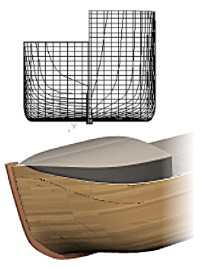
| Background: |
| The ship lines were created by Dr
Allen Magnuson in Feb 2005 using Vacanti Prolines LE. The data was
exported in 2D dxf format, then traced in TurboCad Pro
8.2. Hull is based on the proportions of Noah's Ark according to
Genesis 6:15. Tutorial by Tim Lovett Feb 05. |
|
STEP 8: Keel, Mirror & Render
1. Mirror test
Mirror the half hull.
- Make layer on the profile workplane visible (the geometry will be
used as a mirror plane)
- Set a horizontal workplane (waterplane_0). This should be seen as a
top view
- Select the shelled loft
- Mirror command (Edit / Copy Entities / Mirror)
- "Select the first point of the mirror line"... Pick the
points on the profile workplane using the "Nearest on
Graphic" snap.
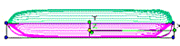
Works OK.
Delete this mirrored half again. We will finish it off before doing the
final mirror.
2. Keel and Stem
A simple bit of 3D this time - a plain old sketch followed by a Normal
Protrude.
- Set the center 'profile' workplane.
- Draw an outline for the keel and stem as a continuous loop.
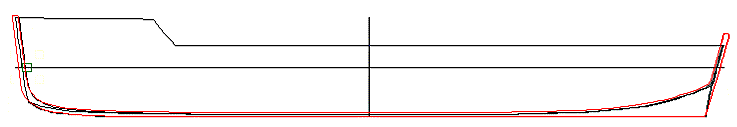
- If the outline is made of several lines, join it into a polyline.
(Modify / Join Polyline)
- Now protrude this by 20 inches INTO the existing shelled loft.
- Check that the keel hides any boundary irregularities in the shell.
There is something at the stern that need's hiding...
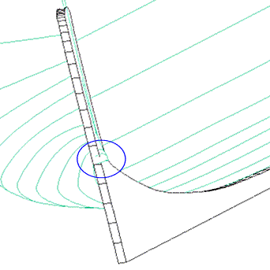
3. Forecastle by boolean cut
Again using the central profile workplane, sketch the shape of the
weather deck (roof), using the level 0 profile as a template. If using a
spline curve to create the geometry, remember to "close" the
curve, otherwise you get a fence instead of a solid.
- Draw the cut-away shape onto the profile workplane.
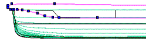
- Extrude this curve out 500 inches (so it extends beyond the side of
the hull). This image is wireframe rendered...
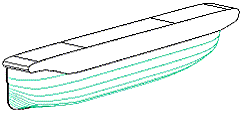
- Do a boolean subtraction. (First you pick the one to KEEP, then the
subtractor... So pick hull then cutout). Should get this...
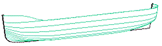
- Now do a mirror to see how it looks... (Group the stem and hull
together first, so the keel is mirrored)
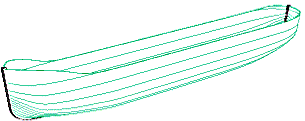
3. Some Lights and Materials
Add a quick material.
Select BOTH hull sides, then RB > Properties > 3D > Edit
Material... >
In Material Properties, select Pine Floorboard, Mapping by X plane >
OK etc > Quality Render
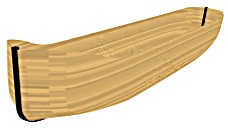
Now add a different material to the stem. I used Birch.
Settings used in the following image;
- Camera Properties: Perspective = 50 degrees, rendering full
- Material Properties: Hull = Pine floorboards, mapping auto, plank
length 100 width 8 etc
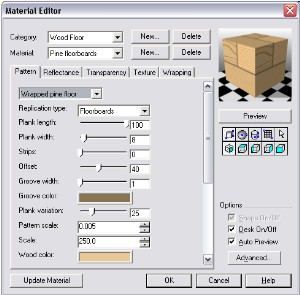
- Lighting: Reduce the ambient from 1000W to 500W. Then add a
directional light, (dx=0, dy=1, dz=-1), colored light pink (wood is
getting a bit too yellow)
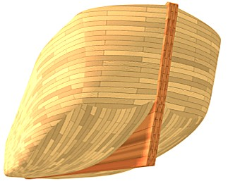
Well, there you go. Obviously the planks are oversize, but this allows
me to keep the images small. Could reduce the ambient a bit more, or
darken the wood perhaps. Plenty of graphical things to try...
It would be nice if TC could work out how to plank a ship hull, but
this is asking a bit much. To be quite honest, planking such a blunt stern
is not easy anyway.
If you think this planking looks like an eggshell, you are pretty
close. Eggshells are 0.36mm over 40mm diameter (Coucke
et al) or diameter just over 100t, at 12 inches the Ark beam is 75t.
Pretty close to an eggshell.
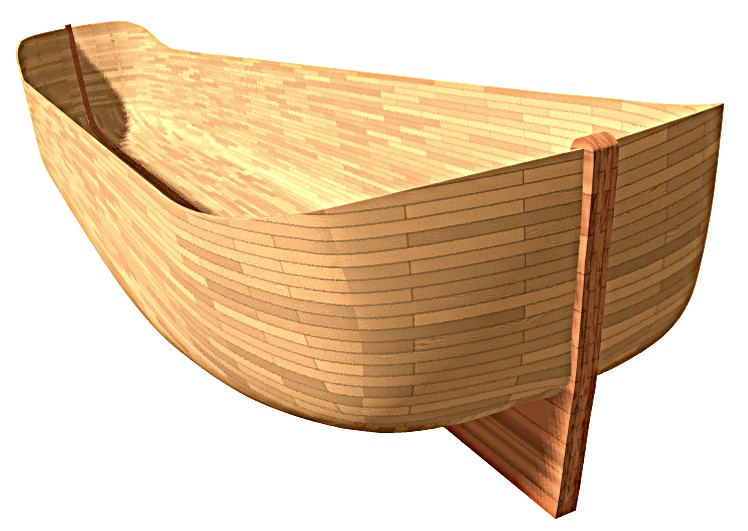
|